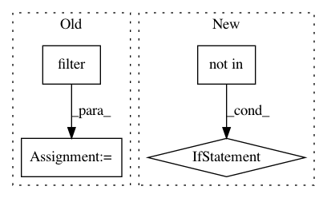

5c8f92c5d865bb8d8a90740506e4a7ef9f62398c,python/src/nnabla/utils/converter/tensorflow/importer.py,,_find_out_terminal_node,#Any#,32
Before Change
terminal_inputs.append(_strip_node_name(node.name))
outputs.add(strip_name)
inputs.update(set(node.input))
terminal_outputs = list(filter(lambda x: x not in unlike_output_types,
outputs - inputs))
if need_add_postfix:
terminal_inputs = add_postfix(terminal_inputs)
terminal_outputs = add_postfix(terminal_outputs)
After Change
terminal_inputs.append(strip_name)
for node in graph_def.node:
if input_cnt[node.name] == 0 and node.op not in unlike_output_types:
terminal_outputs.append(node.name)
if need_add_postfix:
terminal_inputs = add_postfix(terminal_inputs)
terminal_outputs = add_postfix(terminal_outputs)
In pattern: SUPERPATTERN
Frequency: 3
Non-data size: 4
Instances
Project Name: sony/nnabla
Commit Name: 5c8f92c5d865bb8d8a90740506e4a7ef9f62398c
Time: 2019-04-24
Author: Yuchi.Wen@sony.com
File Name: python/src/nnabla/utils/converter/tensorflow/importer.py
Class Name:
Method Name: _find_out_terminal_node
Project Name: chainer/chainercv
Commit Name: 9cc2c91177a6456dea602a93b77864b0a7952333
Time: 2019-02-24
Author: ktns.87@gmail.com
File Name: chainercv/links/model/pickable_sequential_chain.py
Class Name: PickableSequentialChain
Method Name: pick
Project Name: ray-project/ray
Commit Name: d7c95a4a9065cbad73901b4c1de087837e260316
Time: 2020-11-17
Author: simon.mo@hey.com
File Name: python/ray/serve/api.py
Class Name: Client
Method Name: get_handle